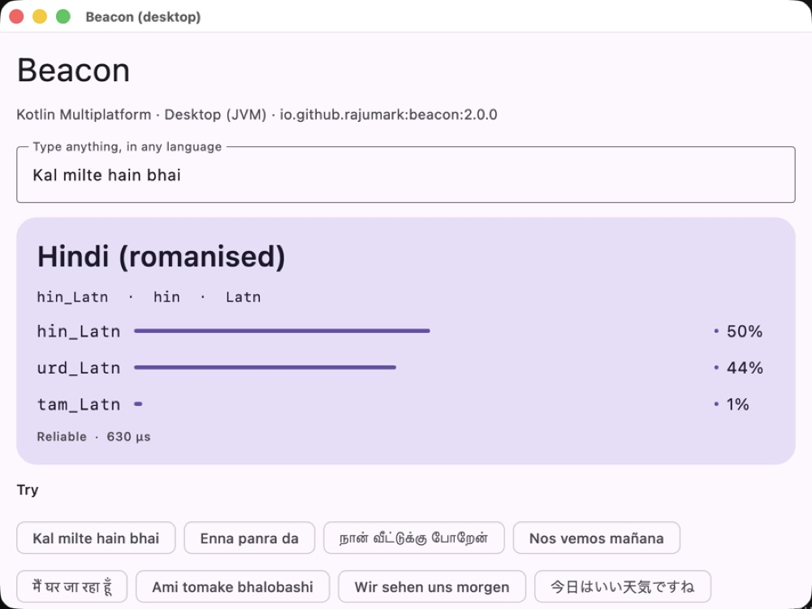
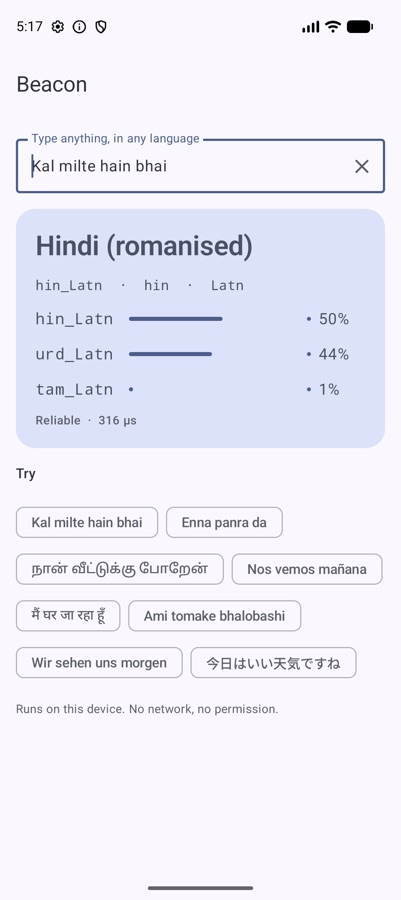
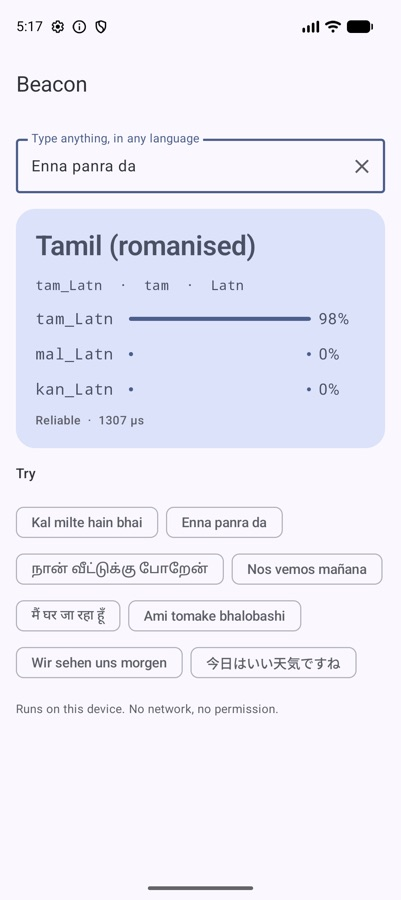
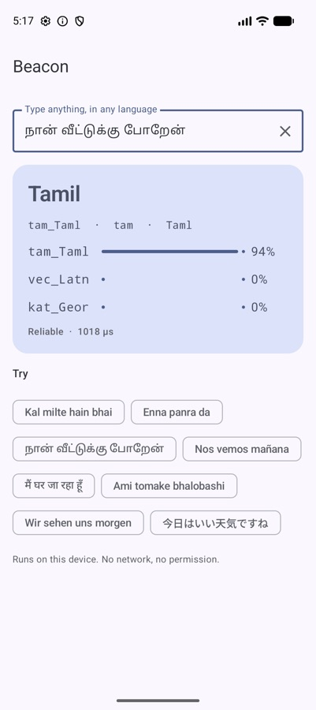

Beacon vs ML Kit: I benchmarked language detection on the messages people actually send
Language detectors score 99% on the benchmarks they're sold with. Then you feed them a two-word Hinglish message and they call it English. So I built my own tests out of real chat, and measured.

hin_Latn, Hindi in Latin letters. Most detectors say English or give up.TL;DR
- On an Android emulator, against Google ML Kit Language ID: 88.3% vs 71.3% on chat, 93.2% vs 84.0% on short text, 92.1% vs 6.9% on romanised Indian languages.
- On FLORES-200 (formal sentences, 64 shared languages) it's level with much bigger models: 98.5%, next to OpenLID-201 at 98.9% (158 MB).
- 8.5 MB, plain Kotlin, 40–90 µs per text, same answer on Android, iOS, desktop and the web.
- One-word inputs are still hard (65%). Close language pairs stay close.
1. Why run another benchmark
Every language detector I tried looked great on paper. The papers test on sentences like “The committee approved the budget for the next fiscal year.” Long, clean, one language, one script.
Real apps receive “ok”, “Enna panra da” and “😀 123”. In India a huge share of chat is Hindi, Tamil or Bengali typed in English letters. A detector that returns en for all of it will route your support ticket to the wrong team, pick the wrong keyboard and translate from the wrong language.
So the question I cared about wasn't “how good is it on news?”. It was “how good is it on the messages people actually send?”.
2. What was measured
Four test sets, none used for training:
- FLORES-200, the standard multilingual benchmark: formal sentences in the 64 languages every compared tool supports.
- Short text: Tatoeba sentences of five words or fewer.
- Chat: 188 hand-written chat messages. Short, informal, with emoji and slang.
- Romanised Indic: Hindi, Tamil, Bengali, Urdu and others typed in Latin letters, from people and from real chat.
The answer counts as right when the label matches, and a Beacon label is language and script: hin_Latn is Hindi in Latin letters, hin_Deva is Hindi in Devanagari. Beacon knows 211 of these labels, including all 22 scheduled Indian languages and 12 romanised South Asian ones.
3. Results against other detectors
| Test | Beacon | Best other detector |
|---|---|---|
| FLORES-200, 64 shared languages | 98.5% | OpenLID-201 98.9% (158 MB), Lingua 98.2% (307 MB) |
| Short text (Tatoeba, ≤ 5 words) | 93.8% | Lingua 89.0% |
| Chat messages (188 hand-written) | 88.3% | MediaPipe 71.3% |
| Romanised Indic (human + real chat) | 93.0% | MediaPipe 7.5%, others ~0% |
The first row is the honest one. On clean formal text Beacon doesn't win — it's within half a point of a 158 MB model, at about a twentieth of the size. Everything below that row is where the difference shows up.
4. On a phone, against ML Kit
ML Kit Language ID is what most Android developers reach for, so I ran both on the same Android emulator:
The last pair isn't a typo. ML Kit wasn't built to tell romanised Hindi from English, so it mostly doesn't. That's not a criticism of ML Kit so much as a gap nobody filled — and it's the gap Indian apps fall into every day.

hin_Latn
tam_Latn
tam_Taml5. Cost
- Size
- About 8.5 MB added to the app (int8 weights and labels)
- Speed
- About 40–90 µs per text once warm, on JVM, Android, JS and Wasm
- Dependencies
- None. No ML Kit, no TFLite, no native code, no Google Play services
- Network
- None. No permission, no telemetry
- Platforms
- Android, iOS, macOS, JVM desktop, JavaScript, WebAssembly
- Parity
- Same label as the Python reference on all 958 test vectors, on every platform
6. Known limits
A benchmark report without this section is an advert. These are the cases where Beacon is weak, and I'd want to know them before shipping it:
- One word is hard. 65% accuracy on single words. Three words or more reach 94–98%.
- Close pairs stay close. Bosnian, Croatian and Serbian in Latin script; Indonesian and Malay; Cantonese and Mandarin in Traditional characters; Awadhi and Bhojpuri against Hindi.
- Some romanised languages are weaker. Very short Bengali, Gujarati, Punjabi and Marathi chat in Latin letters is behind Hinglish and Tanglish.
- Hindi vs Urdu in Latin letters is the same spoken language. Beacon will often give both with similar scores. If your app doesn't need the difference, treat
hin_Latnandurd_Latnas one.
7. How to use the result
val beacon = Beacon() // load once, off the main thread
val r = beacon.detect("Kal milte hain bhai")
r.label // "hin_Latn"
r.confidence // 0.50
r.isReliable // confidence >= 0.5
beacon.candidates("Kal milte hain bhai", limit = 3)
// [hin_Latn 0.50, urd_Latn 0.44, tam_Latn 0.01]
beacon.detect("😀 123") // "und": no letters to judgeMy advice from running these tests: use isReliable, and when it's false, fall back to what you already know (the user's keyboard language, their last message). A detector that says “I'm not sure” is far more useful than one that's confidently wrong.
8. Verdict
If your text is long and formal, any good detector will do. If your users chat — especially in India — the difference between 71% and 88%, or between 7% and 92%, is the difference between a feature that works and one that quietly doesn't. Beacon was built for the second case, and 8.5 MB is a small price for that difference.
The Hoverfly series. Eight small on-device models, one job each, all plain Kotlin Multiplatform with no native code. Each post is written differently, because each model taught me something different.
- Moji — emoji suggestions, told as a story
- Beacon — language detection, as a benchmark report (you are here)
- Comma — punctuation restoration, as a step-by-step tutorial
- Comeback — smart replies, as an honest opinion piece
- Emotion — emotion detection, as questions and answers
- Gatekeeper — toxicity detection, as a practical playbook
- Hideout — personal info hiding, as an audit checklist
- Chalk — doodle recognition, as an engineering deep dive